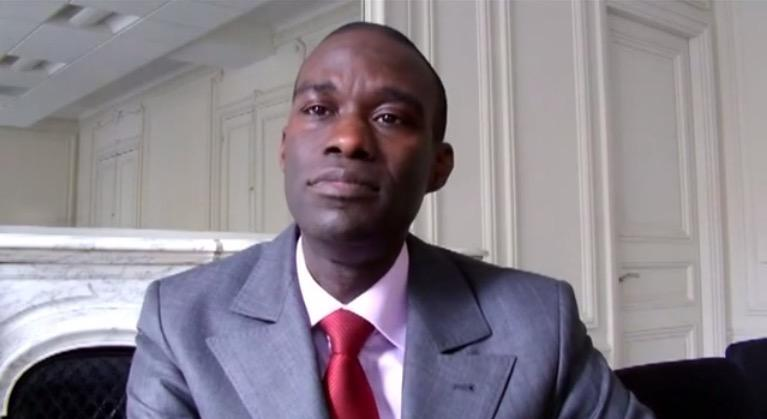

Tidiane DIOH est Fonctionnaire international, Responsable de programme médias à l'Organisation Internationale de la Francophonie (OIF) depuis mars 2004.
Il est considéré aujourd'hui, par nombre d'observateurs, comme l'un des meilleurs spécialistes des médias dans le monde francophone. Le Programme médias qu'il dirige au sein de l'OIF couvre prioritairement les pays d'Afrique, des Caraïbes, d'Asie et d'Europe de l'Est. Il administre, à ce titre, le Fonds d'appui à la presse francophone du Sud, qui a reçu, en novembre 2009, le Trophée de la liberté de la presse décerné par le quotidien camerounais Le Messager.
Tidiane Dioh est un expert reconnu dans le domaine des médias et de la communication dans l'espace francophone. Son parcours combine une solide formation académique, une riche expérience journalistique, une expertise en tant que fonctionnaire international et une activité d'enseignement universitaire.
Il a contribué de manière significative au développement des médias en Afrique subsaharienne et dans l'espace francophone, notamment à travers son travail au sein de l'OIF et ses publications académiques.
Tidiane DIOH a entamé ses études supérieures à l'Université de Liège, en Belgique, où il a obtenu des diplômes en : Philosophie morale, Economie et Gestion, Relations Politiques internationales, Sciences de l'Information de la Communication.
Il a par la suite soutenu une thèse de doctorat en Sciences de l'Information et de la Communication à la Sorbonne nouvelle à Paris.
1994 - 2000 Journaliste à Liège au sein de la rédaction du mensuel belge francophone C4.
2000 Rejoint Paris où il a été journaliste au sein du groupe Jeune Afrique puis à la chaîne de télévision internationale TV5 Monde.
Rédaction de centaines d'articles de presse.
Tidiane DIOH a couvert de nombreux événements internationaux, notamment les championnats du monde d'athlétisme à Paris en août 2003.
Depuis mars 2004 Fonctionnaire international, Responsable de programme médias à l'Organisation Internationale de la Francophonie (OIF).
Il administre le Fonds d'appui à la presse francophone du Sud, qui a reçu, en novembre 2009, le Trophée de la liberté de la presse décerné par le quotidien camerounais Le Messager.
Le Programme médias qu'il dirige au sein de l'OIF couvre prioritairement les pays d'Afrique, des Caraïbes, d'Asie et d'Europe de l'Est.
Depuis septembre 2008 Chargé de Cours à l'Université Paris-III Sorbonne-Nouvelle.
Membre élu, au titre de personnalité extérieure, du Conseil de gestion de l'Unité de Formation et de Recherche Information et Communication de l'Université Sorbonne nouvelle.
Ses enseignements portent sur les domaines suivants :
Tidiane DIOH a également siégé dans un jury de thèse de doctorat à l'Université Toulouse Le Mirail en janvier 2012.
Tidiane Dioh est journaliste et consultant en Relations internationales, fondateur de Lenad Consulting.
Lenad Consulting propose des services de conseil en relations internationales, communication, médias et géopolitique.
Pour plus d'informations sur ses services de conseilLenad Consulting est un cabinet de conseil en Relations Internationales fondé par Tidiane Dioh.
Tidiane Dioh est journaliste et consultant en Relations internationales, reconnu comme l'un des meilleurs spécialistes des médias dans le monde francophone.
Lenad Consulting intervient principalement dans :
Tidiane DIOH a rédigé des centaines d'articles de presse. Il est aussi l'auteur de nombreux travaux universitaires et de plusieurs ouvrages :
Représentations, idéologie et instrumentalisation
Éditions L'Harmattan, Paris
Co-écrit avec un groupe de chercheurs sub-sahariens spécialisés dans le domaine de l'information et de la communication, cet ouvrage revisite et questionne un certain nombre de concepts du temps présent.
Éditions Alternatives, Paris
Co-écrit avec le photographe français Eric Guglielmi, ce livre raconte, grâce aux textes et aux images, le magal, qui signifie commémoration en langue wolof. Le magal célèbre le départ en exil du Cheick Ahmadou Bamba, fondateur et inspirateur de la confrérie des mourides qui rassemble des millions de fidèles à travers le monde. Une fois l'an, Touba, petite ville du Sénégal et capitale des Mourides, accueille des centaines de milliers de fidèles de la confrérie à l'occasion du magal.
Éditions Karthala, Paris
Cet ouvrage raconte près de cinquante ans d'histoire de la télévision en Afrique noire francophone qui commence avec la toute première télévision lancée au Congo Brazzaville en novembre 1962.
Tidiane DIOH est Chargé de Cours à l'Université Paris-III Sorbonne-Nouvelle où il est membre élu, au titre de personnalité extérieure, du Conseil de gestion de l'Unité de Formation et de Recherche Information et Communication de l'Université Sorbonne nouvelle.
Ses enseignements portent sur les domaines suivants :
Tidiane DIOH siégeant dans un jury de thèse de doctorat à l'Université Toulouse Le Mirail, janvier 2012
Tidiane Dioh est reconnu comme l'un des meilleurs spécialistes des médias dans le monde francophone. Son expertise couvre les domaines suivants :
Responsable de programme médias
Depuis mars 2004
Chargé de Cours
Depuis septembre 2008
Membre élu du Conseil de gestion de l'UFR Information et Communication
Fondateur : Tidiane Dioh
Journaliste et Consultant en Relations Internationales